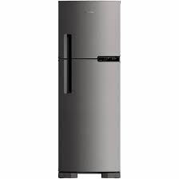
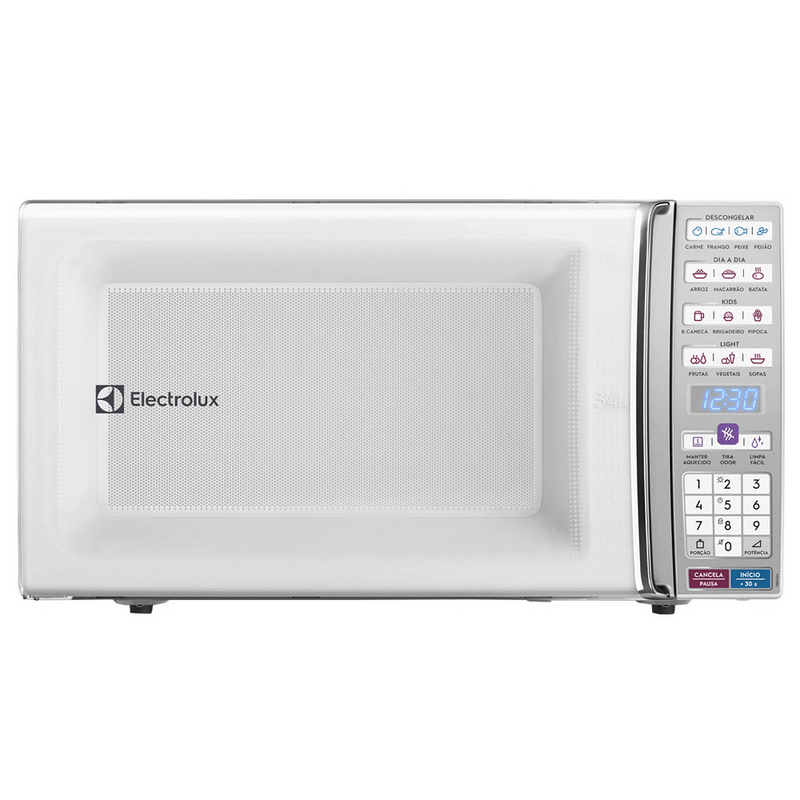

São os objetos tridimensionais definidos no espaço. Alguns exemplos de sólidos geométricos são: cubos, pirâmides, prismas, cilindros e esferas. O conjunto de todos os sólidos geométricos costuma ser dividido em três grandes grupos: poliedros, corpos redondos e outros. Suas características são objetos tridimensionais, possuem largura, comprimento e altura, e podem ser classificados entre poliedros e não poliedros (corpos redondos). Os elementos principais de um poliedro são: faces, arestas e vértices.
Geladeira:
O paralelepípedo é um sólido geométrico. O paralelepípedo é um sólido geométrico que possui três dimensões: altura, largura e comprimento. Esse prisma possui todas as suas faces no formato de um paralelogramo, sendo formado por 6 faces, 8 vértices e 12 arestas.
A área total de um paralelepípedo é calculada por AT = 2ab + 2ac + 2bc.
Geladeira Frost Free 375L Inox
Especificações Técnicas
Altura
176.0cm
Profundidade
75.5cmLargura (cm)62,1
Peso
58.0kgTensão / Voltagem
127V ou 220V
Consumo
custo mensal de 0,81
54.0kWh
43,74 reais
volume 7,70
área 5,31 metros quadrados

Paralelepípedo
tv:
O cubo é um sólido geométrico em que todas as faces são quadrados congruentes. Dessa maneira, ele é classificado como poliedro. Além disso, também pertence ao conjunto dos poliedros convexos e dos poliedros de Platão. A área de um poliedro e, consequentemente, do cubo é a soma das áreas dos polígonos que o formam.
O cubo é um sólido geométrico composto por 12 arestas, 8 vértices e 6 faces. Devido ao fato de ele possuir 6 faces, o cubo é conhecido também como hexaedro.
O cubo é uma figura que faz parte da geometria espacial.
Diagonal Lateral: d = a√2. Nesse caso, para calcular a área total do cubo, que possui 6 faces, utilizamos a seguinte fórmula:
At = 6a2
At: área total.
mart TV LED HQ 32 Polegadas HD, Wi-Fi, HDMI
Altura com base
47.0cm
Largura
73.5cm
Profundidade com base
KWH
custo mensal de 0,81
19.0cm
4,8
3,88 reais
volume
área
Cubo
Caixa De Som:
A fórmula do volume do cilindro é Vcilindro=Abase·h=πr2·h. A planificação do cilindro é formada pelos círculos das bases e pelo retângulo da superfície lateral. O cilindro possui dois tipos de secção: a transversal e a meridiana.
O cilindro é um sólido geométrico. Possui duas bases circulares paralelas e uma área lateral que conecta essas bases. É um corpo redondo devido às suas bases circulares. São conhecidos dois tipos de cilindro, o cilindro reto e o cilindro oblíquo.
O volume de um cilindro é π r² h, e a área da sua superfície é 2π r h + 2π r²
Cilindro
chuveiro:
A proporção da circunferência ao diâmetro é Pi ou π, ou seja, circunferência/diâmetro = Pi; A circunferência de um círculo é igual a 2π*r ou 2π*raio. Ex: Se o raio de um círculo tem 3m, então C = 2π*3 = 6π metros. O diâmetro de um círculo é igual a circunferência sobre π.
Um corpo redondo é um sólido geométrico com, pelo menos, uma superfície arredondada. Estes sólidos podem rolar sobre estas superfícies. São formas tridimensionais, ou seja, ocupam espaço, por isso, possuem volume.
Este sólido geométrico é bem redondinho. Não tem faces planas: na verdade tem apenas uma única face curva e rola como um a bola de futebol. Isto porque também a bola de futebol é uma esfera.
A área de um círculo é pi vezes o raio elevado ao quadrado (A = π r²).
A proporção da circunferência ao diâmetro é Pi ou π, ou seja, circunferência/diâmetro = Pi; A circunferência de um círculo é igual a 2π*r ou 2π*raio. Ex: Se o raio de um círculo tem 3m, então C = 2π*3 = 6π metros. O diâmetro de um círculo é igual a circunferência sobre π.
Chuveiro Elétrico Acqua Duo Ultra Preto/Cromado 220v/7800wModelo
Acqua Duo Ultra
Altura
26,10 cm
Largura
21,00 cm Profundidade
kwh
gasto 0,81
52,00 cm
234
63,18
volume
área
Cone
Microondas :
Dimensões do produto - Largura
53,9 cm.
Dimensões do produto - Altura
30 cm.
Dimensões do produto - Profundidade
42,4 cm.
Certificado Homologado pela Inmetro Número
kwh
BRA17/10317
39
preço 0,81 10,53
volume
área
